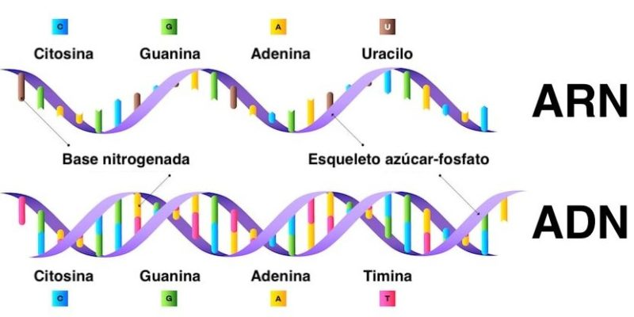

Educación Secundaria – Computación e Información | Ciclo II
El ADN (Ácido Desoxirribonucleico) contiene las instrucciones genéticas de todos los seres vivos.
El ARN (Ácido Ribonucleico) transporta esa información para producir proteínas.
Ambos forman el código de la vida y determinan nuestras características biológicas.
Realizamos un experimento para observar el ADN del kiwi a simple vista.
Materiales: kiwi maduro, detergente, sal, alcohol frío, vaso transparente, filtro y cuchara.
Procedimiento:
Así demostramos que el ADN puede extraerse y verse fuera de las células.
CRISPR-Cas9 es una herramienta que permite cortar y modificar genes de forma precisa, rápida y económica.
En 2025, se utiliza para tratar enfermedades genéticas como anemia falciforme y distrofia muscular, y para mejorar cultivos resistentes a plagas y sequías.
Cómo funciona:
“Con CRISPR-Cas9, la humanidad no solo puede leer el código de la vida… ahora puede reescribirlo.”
CASTILLO SUMIRE, Belssy Mitzy
FLORES REYES, María Fernanda
FLORIAN BALDARRAGO, Danna Liz
FRANCO MEDINA, Jorge Lázaro
KANCHA HUAMÁN, Aida Zulema
TERRONES CÓRDOVA, Catherine Lucy Naomi
Estudiantes de Educación Secundaria
Especialidad: Computación e Información
Ciclo II